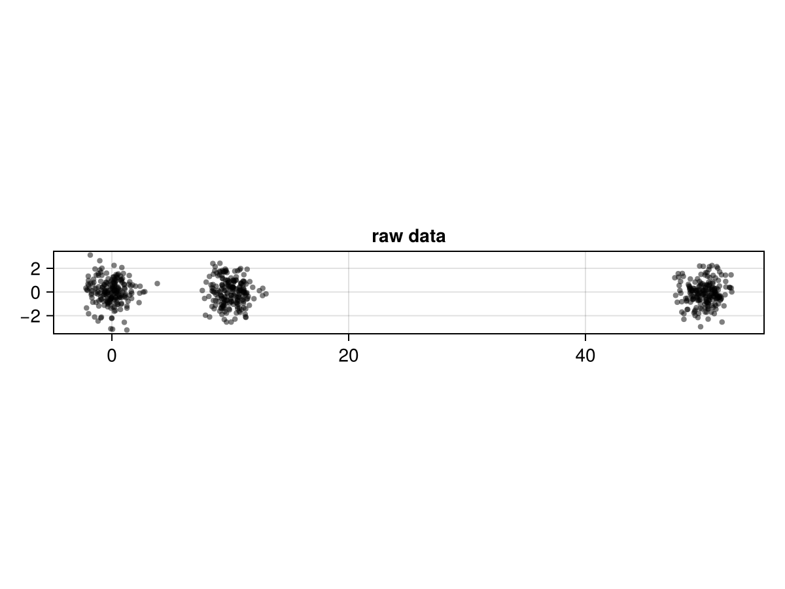
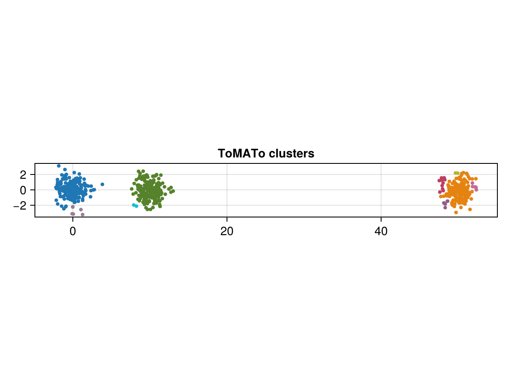

ToMATo clustering
ToMATo (Topological Mode Analysis Tool) is a density-based clustering algorithm with a topological twist: it seeds one cluster per density peak and then merges peaks whose topological prominence falls below a threshold τ. This makes the number of clusters a consequence of the data's persistence rather than a hyperparameter you guess up front.
The pipeline is: estimate a density at each point → build a proximity graph → run tomato → colour the points by their assigned cluster.
using JuliaTDA
using CairoMakie
CairoMakie.activate!(type = "png")
const DS = JuliaTDA.MetricSpaces.DatasetsA noisy multi-blob dataset
X = DS.three_clusters(600)
mat = JuliaTDA.MetricSpaces.as_matrix(X) # 2 x n matrix of coordinates
fig = Figure()
ax = Axis(fig[1, 1]; title = "raw data", aspect = DataAspect())
scatter!(ax, mat[1, :], mat[2, :]; markersize = 6, color = (:black, 0.5))
fig
Density estimation
ToMATo ships its own clustering-oriented density estimator. Because MetricSpaces also exports a knn_density, the ToMATo one is reached fully qualified as JuliaTDA.ToMATo.knn_density (the unqualified knn_density is MetricSpaces' version):
dens = JuliaTDA.ToMATo.knn_density(X; k = 15)
extrema(dens)(0.39870883044606187, 3.3901411197064197)You could equally drive ToMATo with MetricSpaces' filters — e.g. dens = knn_density(X) (the unqualified, MetricSpaces version) or dens = dtm_density(X; k = 15). Any per-point density vector works.
Proximity graph
proximity_graph connects each point to its near neighbours within radius ϵ, falling back to nearest neighbours where the ball is too sparse.
g = proximity_graph(X, 0.5)
g{600, 2001} undirected simple Int64 graphRunning ToMATo
tomato takes the metric space, the proximity graph, the densities, and the merging threshold τ. It returns the cluster label of every point and a dictionary of the birth/death of each density peak (useful for choosing τ).
clusters, births_deaths = tomato(X, g, dens, 1.0; max_cluster_height = 0)
n_clusters = length(unique(clusters))9The result
fig = Figure()
ax = Axis(fig[1, 1]; title = "ToMATo clusters", aspect = DataAspect())
scatter!(ax, mat[1, :], mat[2, :]; markersize = 6, color = clusters, colormap = :tab10)
fig
The births_deaths dictionary records the prominence of each candidate peak; plotting the gaps between consecutive prominences is the standard way to read off a good τ (a large gap separates "real" clusters from noise). TDAplots provides tomato_persistence_plot and tomato_graph_plot for exactly this kind of diagnostic.